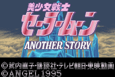
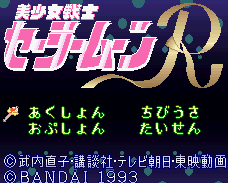
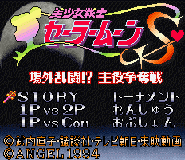
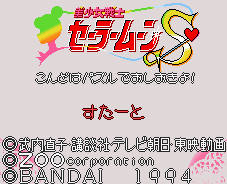
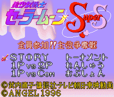
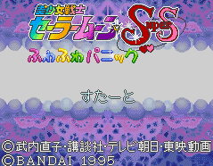
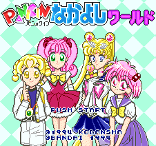

Sailor Moon - SNES Games
![[Bishojo Senshi Sailor Moon]](images/snesSM.gif)
Controls
- A button: [not used]
- B button: Jump
- X button: [not used]
- Y button: Attack
- L button: [not used]
- R button: [not used]
- Start: Pause
- Select: [not used]
You walk around beating up the bad guys to get to the level boss. Along the way, you can pick up items that boost your
health and weapons to use against the enemy. The original five Sailor Senshi are available to select.
From Jacob Poon:
To select the same player, hold L + R buttons when selecting two player mode.



Controls
- A button: Kick
- B button: Kick
- X button: Punch
- Y button: Punch
- L button: [not used]
- R button: [not used]
- Start: Pause
- Select: [not used]

Controls
- A button: [not used]
- B button: Destroy Block
- X button: Switch Directions
- Y button: Use Special Attack (VS games only)
- L button: [not used]
- R button: [not used]
- Start: Pause
- Select: [not used]
This is a yet another wacky puzzle game loaded with extreme cuteness. You can choose from a single player game, a
VS CPU game, and a two player VS game. The object of the puzzle is to clear your area of blocks. You clear blocks
when there are two blocks next to each other that are the same color. All blocks of the same color that are right next
to each other are removed in long chains if you are lucky. While you are trying to do this, blocks and special items
fall down onto your stack. Some items will remove a row of blocks while others will just blow up a few blocks near it.
As you clear the blocks, horizontal space becomes available and all blocks will move toward empty space depending on
the direction of the arrow to the side of your stack. By pressing X, you can change the direction the blocks will
move. This becomes useful when you have a lot of space horizontally; you can position your stack in the best place for
the blocks currently falling down. In VS games, your opponent can perform special attacks that can drop black blocks
onto your stack. The only way to remove black blocks is to destroy a string of blocks right next to them.

- Company: Angel
- Date Released: 1996
- Genre: Fighting game

Controls
- A button: Throw Things to Pop Balloons
- B button: Get Help from Tuxedo Mask/Use Super Move
- X button: [not used]
- Y button: [not used]
- L button: [not used]
- R button: [not used]
- Start: Pause
- Select: [not used]
From Roger Nystrom:
Sailor Moon returns with the Outer Senshi, and this time they're fighting... each other. This game can be best
described as a reverse Tetris with balloons versus an opponent (or a reverse Puzzle Fighter - LAC).
You get to choose from Sailor Moon, Sailor Mercury, Sailor Mars, Sailor Jupiter, Sailor Venus, and Sailor Chibimoon in
the normal game mode (first option on the screen). The second option lets you set up a 2-player versus mode, winner
being the one who takes two out of three matches. The third mode is a timed trial, making you empty the pit in
the alloted time. When you select any of these three modes, the options Start and Continue will appear.
The game play is simple; two senshi walk along the bottom of the screen and pop balloons that continue to rise in the
pit preventing the ballons from stacking beyond the pit. By destroying a balloon that is next to a balloon of the
same color, they will all blow up and depending on how many blow up, they will turn into a silver balloon. This silver
ballon is unbreakable unless it is next to a set of balloons when you destroy them. This silver balloon will go over to
your opponent's side. By blowing up single balloons, it will fill up the gauge on the side of your pit. By filling it halfway,
you can get assistance from Tuxedo Mask, who will take a row from your pit. This will lower your gauge. If your gauge
is completely filled, you will then be able to pull off a super move just like they do in the show, affecting either your or
your opponent's pit. For example, Venus uses her Love and Beauty Shock to change her last four rows into
balloons of the same color, while Mars makes some of her opponent's balloons turn into silver ones.
A word of warning is that popping a set of like balloons lowers your gauge, and emptying it completely will cause you to
untransform, leaving you able to only break one balloon at a time. The game overall is quite addictive and
extremely sweet, with high-pitched super move cries and SD-characters as far as the eye can see.

From Jacob Poon:
In VS battle mode, hold L + R buttons on the stage selection screen to access more stages.
Anime Video Game Resource Center © 1998 by Luis A. Cruz